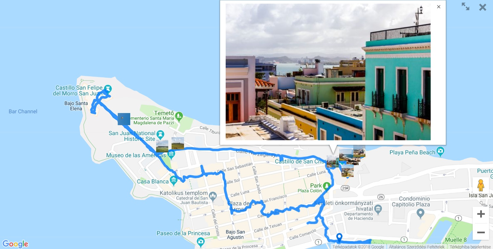
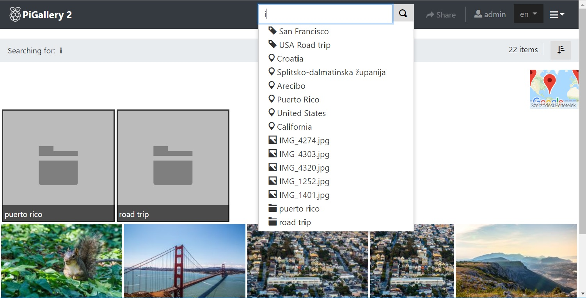
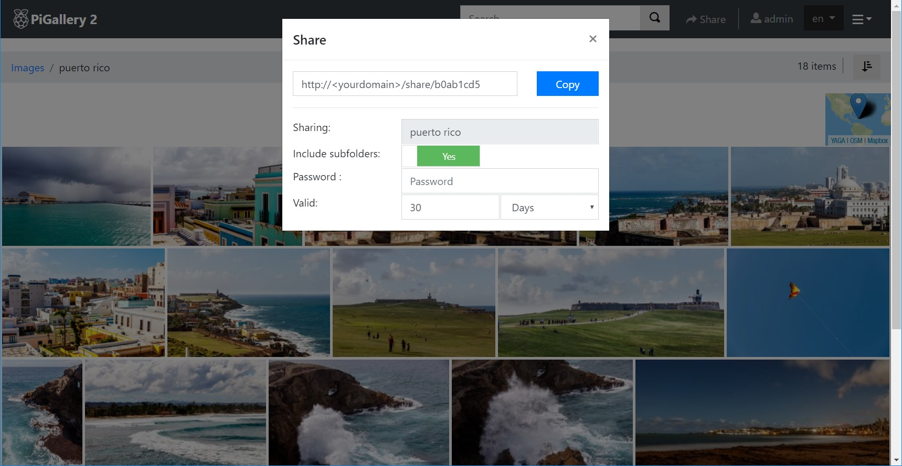
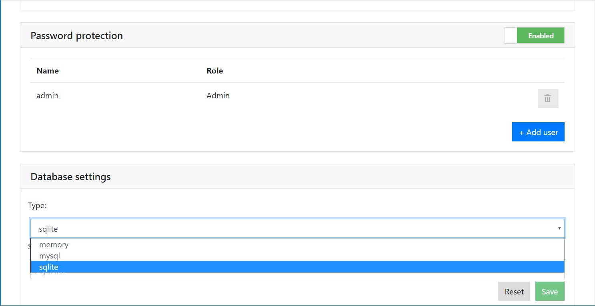
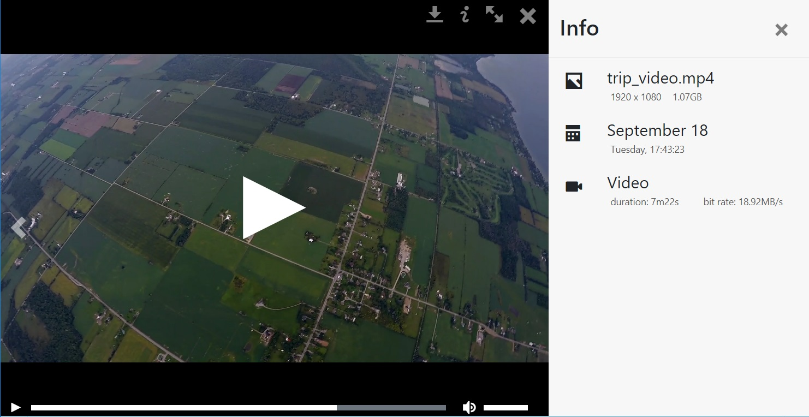
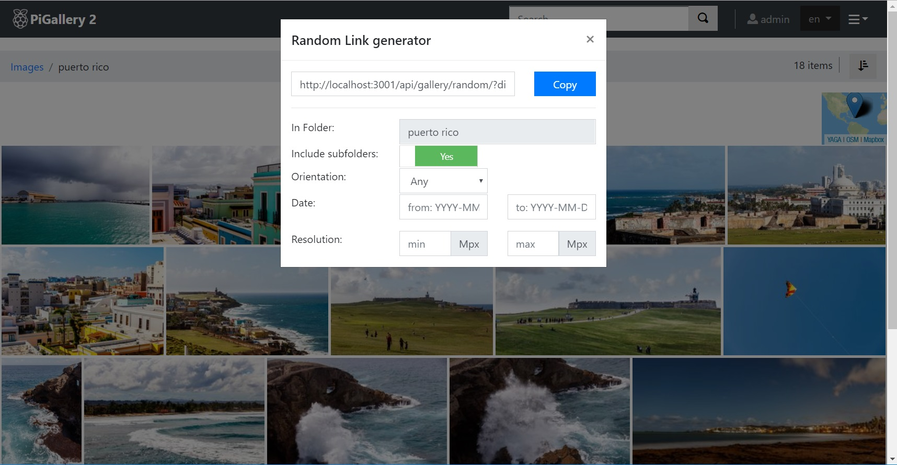
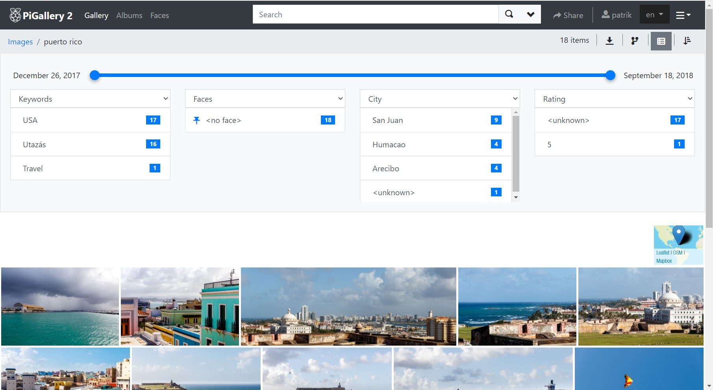

PiGallery 2 is a self-hosted directory-first photo gallery website.
Try our live demo! (First load may take up 30s, while the server boots up)
The gallery is a directory first gallery. It renders your directory structure as it is.
Supports rich search queries and fully dockerized.
Main features:
Photo viewer
Nice photo viewer with optional information panel that shows all important information about the photo.

Map
PiGallery2 reads the location data of the photos and puts them on a nice map. The gallery also supports *.gps file to show your tracked path on the map too. It by default supports OpenStreetMap and Mapbox, but you can also add you own favourite map provider.Advanced searching
App supports full boolean logic with negation and exact or wildcard search. It also provides handy suggestions with autocomplete.Match types:
person:"John" # exact match
person:(John) # wildcard match
person:John # same as person:(John)
person!:John # negation

Supported keywords:
after:2020
before:2021
orientation:portrait
orientation:landscape
maxRating:1
maxRating:5
minResolution:1
maxResolution:10
keyword:"house"
caption:"caption"
directory:"dir name/another dir"
file_name:"img.jpg",
person:"John",
position:"USA" # use city, state, country names
5-km-from:(New York) # photos 5 km from the center of New York
any_text:"apple", # searches for apple everywhere, "any_text:" can be omitted
Bool expressions:
John and Kate # photos with "John" and "Kate" (any string match)
John Kate # same as "John and Kate"
John or Kate # photos with "John" or "Kate" (any string match)
2-of:(John, Kate, Steve) # lists photos that satisfies at least 2 out of the 3 names (any string match)

Sharing
You can share your photo folders with your friends. The sharing link can be also password protected. Limitations: you cannot share search results.Easy settings
PiGallery2 has a rich settings page where you can easily set up the gallery. Click here to see all the setting in the live demo.


Video playback
It also supports *.mp4, *.webm, *.ogv and *.ogg files.Random link
You can create a link that will serve a random photo from your gallery. You can use this link with 3rd party applications, like with an automatic wallpaper changer gadget.


Local filters
Rich filter panel, where you can further filter your directory or search results.All features:
- supported formats:
- images: jpg, jpeg, jpe, webp, png, gif, svg
- videos: mp4, ogg, ogv, webm
- Rendering directories as it is
- Listing subdirectories recursively
- Listing photos in a nice grid layout
- supporting most common image formats
- showing tag/keywords, locations, GPS coordinates for photos
- rendering photos on demand (on scroll)
- On the fly thumbnail generation in several sizes
- prioritizes thumbnail generation (generating thumbnail first for the visible photos)
- saving generated thumbnails to TEMP folder for reuse
- supporting several core CPU
- supporting hardware acceleration (sharp)
- Custom lightbox for full screen photo and video viewing
- keyboard support for navigation
- showing low-res thumbnail while full image loads
- Information panel for showing Exif info
- Automatic playing
- gesture support (swipe left, right, up)
- shortcut support
- Client side caching (directories and search results)
- Rendering photos with GPS coordinates on open street map
- .gpx file support: rendering paths to map
- supports OSM and Mapbox by default, but you can add any provider that has a tile url
- Two modes: SQL database and no-database mode
- both modes supports
- user management
- password protection can be disabled/enabled
- database mode supports:
- faster directory listing
- searching
- instant search, auto complete
- sharing
- setting link expiration time
- both modes supports
- Faces (persons) support
- reads Adobe's XMP Face region metadata. (It is defined by the Metadata Working Group (MWG).)
- shows face bounding box over images
- internalization / translation support
- Nice design
- responsive design (phone, tablet desktop support)
- Setup page
- Random photo url
- You can generate an url that returns a random photo from your gallery. You can use this feature to develop 3rd party applications, like: changing desktop background
- video support
- fully supports .mp4 files and partially (might have errors with safari and IE) supports .ogg, .ogv, .webm files
- uses ffmpeg and ffprobe to generate video thumbnails
- Markdown based blogging support
- You can write some note in the *.md files for every directory